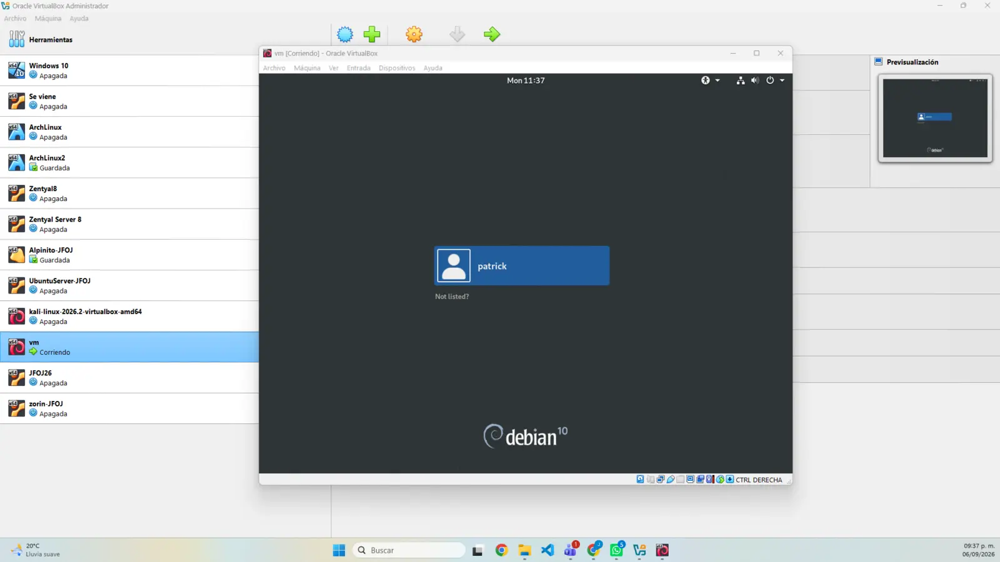
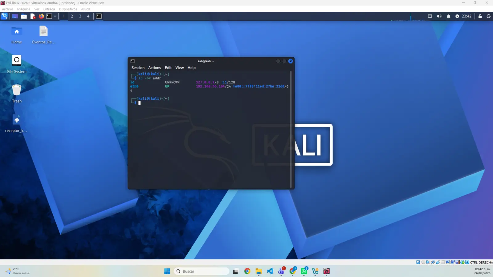
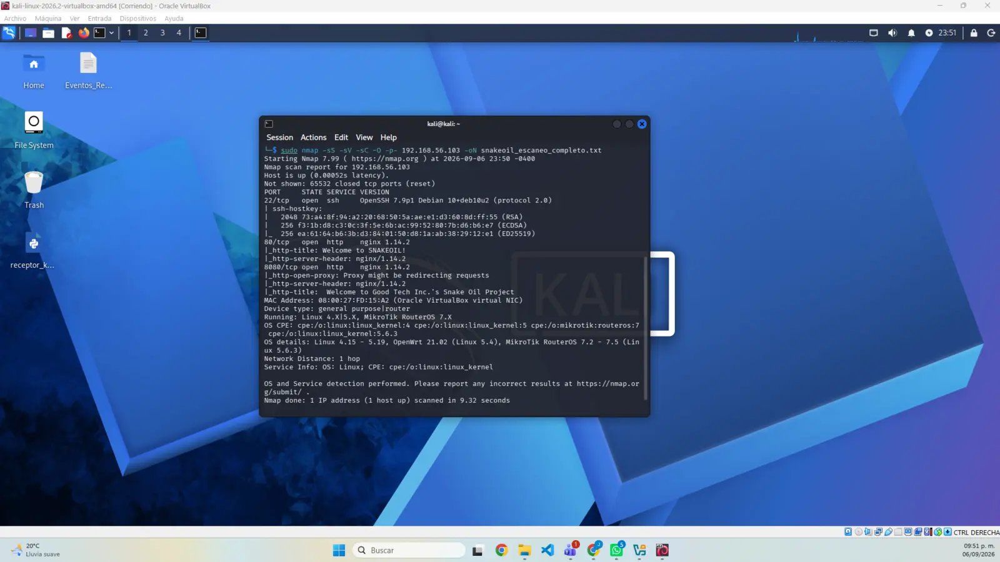
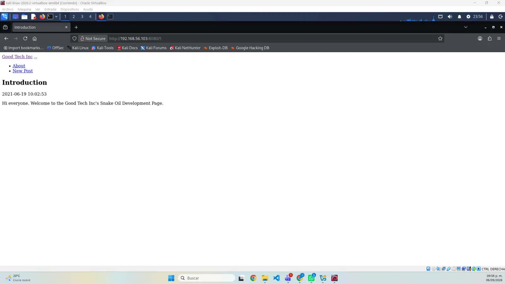
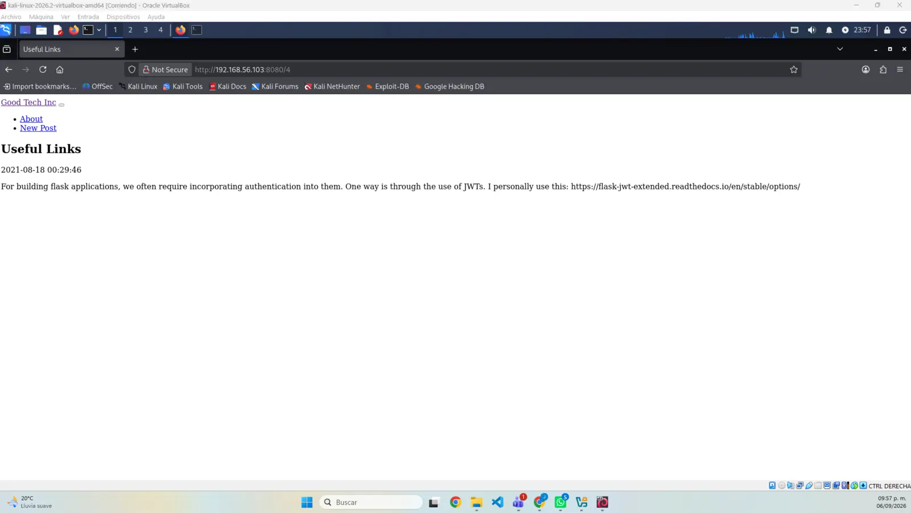
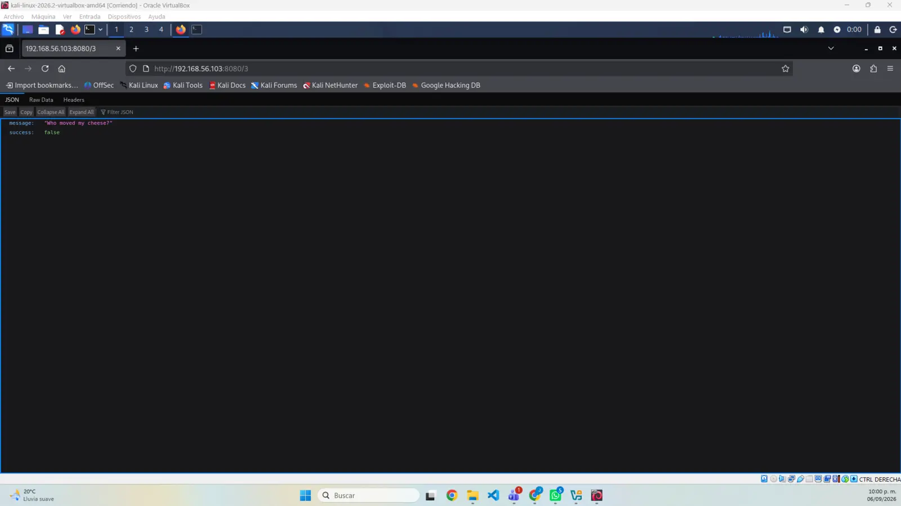
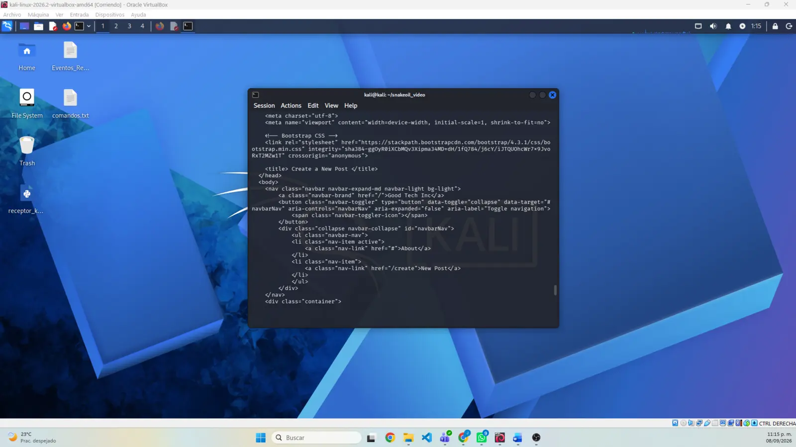
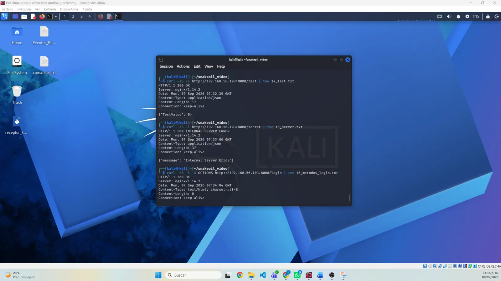
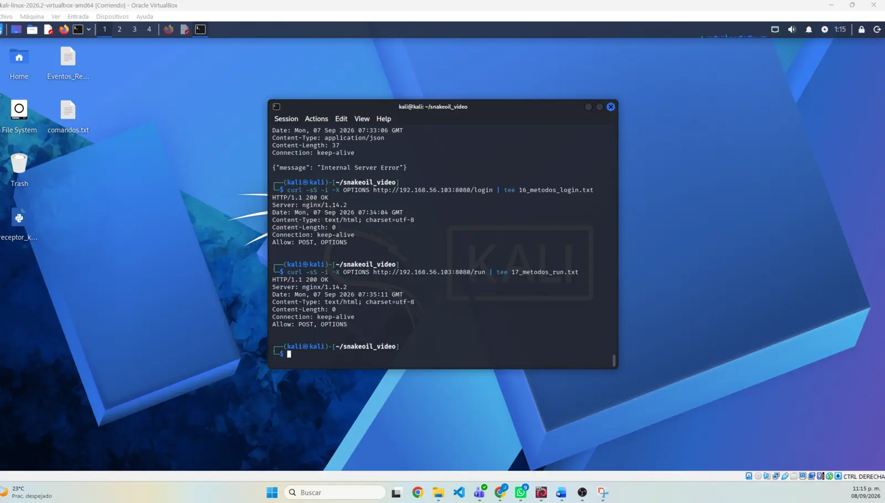

Estación de análisis
Kali Linux en 192.168.56.104/24.
Primer parcial · Proyecto PR01
Walkthrough en acción de digitalworld.local: SNAKEOIL. Preparación del laboratorio, reconocimiento, enumeración, análisis técnico y documentación reproducible dentro de un entorno autorizado.
01 / RESUMEN EJECUTIVO
El proyecto aplica los conocimientos de seguridad informática a la evaluación controlada de una máquina virtual deliberadamente vulnerable. Kali Linux funciona como estación de análisis y SNAKEOIL como único objetivo autorizado; ambas máquinas operan dentro de una red privada de VirtualBox sin exposición a Internet.
Se completaron la preparación del laboratorio, la identificación de direcciones, el descubrimiento del objetivo, el escaneo de los 65,535 puertos TCP, el reconocimiento web y la enumeración manual y automática. La validación no destructiva confirmó la superficie de entrada de la aplicación, pero todavía no se ha realizado explotación, acceso inicial ni escalamiento de privilegios.
192.168.56.103 con los puertos 22, 80 y 8080 abiertos. El servicio web del puerto 8080 concentra los hallazgos actuales.02 / OBJETIVOS
El objetivo general es demostrar la aplicación práctica de técnicas y metodologías de seguridad mediante un walkthrough detallado, seguro y documentado de una máquina virtual vulnerable.
03 / ALCANCE Y LABORATORIO
Kali Linux en 192.168.56.104/24.
digitalworld.local SNAKEOIL en 192.168.56.103.
Red 192.168.56.0/24 configurada como solo-anfitrión.
Oracle VirtualBox con ambas máquinas conectadas al mismo adaptador privado.
Objetivo Linux basado en Debian 10; detección aproximada mediante Nmap.
Las pruebas se restringen a la máquina local de práctica y no incluyen sistemas externos.
04 / METODOLOGÍA Y AVANCE
Máquinas importadas y adaptadores privados verificados.
SNAKEOIL inició correctamente sobre Debian 10.
La interfaz activa confirmó la dirección 192.168.56.104/24.
La dirección IP se correlacionó con la MAC registrada en VirtualBox.
Se revisaron todos los puertos TCP, versiones y scripts básicos.
Se examinaron las aplicaciones de los puertos 80 y 8080.
Se revisaron publicaciones, identificadores y pistas tecnológicas.
Gobuster localizó rutas no visibles desde la navegación principal.
En proceso mediante solicitudes GET y OPTIONS sin cargas útiles.
Pendiente de una hipótesis confirmada y una prueba de concepto controlada.
Pendiente; se documentará solo si se obtiene acceso autorizado.
Pendiente de los resultados definitivos del recorrido.
05 / REGISTRO DE COMANDOS
ip -br addrConsulta resumida de interfaces, estado y prefijo de red.
sudo nmap -sn 192.168.56.0/24Identificación de hosts activos sin escaneo de puertos.
sudo nmap -sS -sV -sC -O -p- 192.168.56.103 -oN snakeoil_escaneo_completo.txtRevisión de todos los puertos TCP, versiones, scripts básicos y sistema operativo aproximado.
gobuster dir -u http://192.168.56.103:8080 -w /usr/share/wordlists/dirb/common.txt -x txt,html,py -o gobuster_8080.txtBúsqueda de rutas y archivos no enlazados desde la interfaz.
curl -sS -i http://192.168.56.103:8080/<ruta>Inspección de encabezados y respuestas de /users, /registration, /create, /test y /secret.
curl -sS -i -X OPTIONS http://192.168.56.103:8080/<login|run>Caracterización de los endpoints sin ejecutar su operación principal.
06 / PUERTOS Y SERVICIOS
OpenSSH 7.9p1 Debian 10+deb10u2. Servicio de acceso remoto que requiere autenticación.
nginx 1.14.2. Página estática de bienvenida que confirma la configuración de SNAKEOIL.
nginx 1.14.2. Aplicación Good Tech Inc.'s Snake Oil Project y principal superficie de análisis.
Nmap estimó un sistema Linux; la máquina inició sobre Debian 10 dentro de VirtualBox.
07 / ENUMERACIÓN MANUAL
Publicación Introduction accesible mediante un identificador numérico predecible.
House Rules está firmada por Patrick y lo relaciona con el desarrollo de la aplicación.
Useful Links indica que la aplicación utiliza Flask y autenticación mediante Flask-JWT-Extended.
El identificador ausente respondió con JSON personalizado: Who moved my cheese? y success: false.
La secuencia de recursos y las pistas tecnológicas orientan el análisis de autenticación y manejo de contenido, pero no constituyen por sí mismas una explotación confirmada.
08 / ENUMERACIÓN DE ENDPOINTS
GET devuelve una vista HTML titulada Create a New Post. No se enviaron ni guardaron datos.
GET no está permitido; OPTIONS declara POST y OPTIONS.
GET devuelve JSON con el mensaje Wrong Method!!!, aunque el transporte responde 200.
GET no está permitido; OPTIONS declara POST y OPTIONS. No se enviaron comandos.
GET produce un error interno con una respuesta JSON genérica.
GET devuelve el objeto JSON {"TestValue": 0}.
GET expone sin autenticación aparente el usuario patrick y un hash PBKDF2-SHA256.
09 / HALLAZGOS PRELIMINARES
Divulgación confirmada de un nombre de usuario y material de autenticación. Severidad preliminar: media.
Respuesta HTTP 500 reproducible. Requiere más validación; un error aislado no prueba impacto explotable.
/login y /run aceptan POST, pero todavía se desconocen campos, validaciones y controles JWT.
No se ha recuperado ninguna contraseña, enviado una carga útil, ejecutado comandos ni obtenido acceso al sistema.
10 / RIESGOS Y MITIGACIONES
11 / EVIDENCIAS
Cada imagen conserva una fase verificable del laboratorio y puede abrirse en tamaño completo.



192.168.56.103.






/3.

/users.
/create y /registration.
/test y /secret.
/login y /run.12 / ENTREGABLES
La página reúne las capturas, el reporte técnico de avance y el acceso institucional al video walkthrough de PR01.
13 / SIGUIENTES PASOS
14 / CONCLUSIÓN Y REFLEXIÓN
El laboratorio quedó correctamente segmentado y la superficie inicial se redujo a tres servicios TCP. La aplicación del puerto 8080 permitió confirmar una exposición de información en /users y caracterizar varios endpoints sin ejecutar acciones destructivas.
El principal aprendizaje es separar las pistas de los hallazgos confirmados: descubrir una ruta, versión o respuesta anómala orienta la investigación, pero no basta para afirmar que existe una vulnerabilidad explotable. Mantener el alcance aislado, registrar cada comando y reconocer los límites de la evidencia hace que el walkthrough sea seguro, honesto y reproducible.
15 / REFERENCIAS